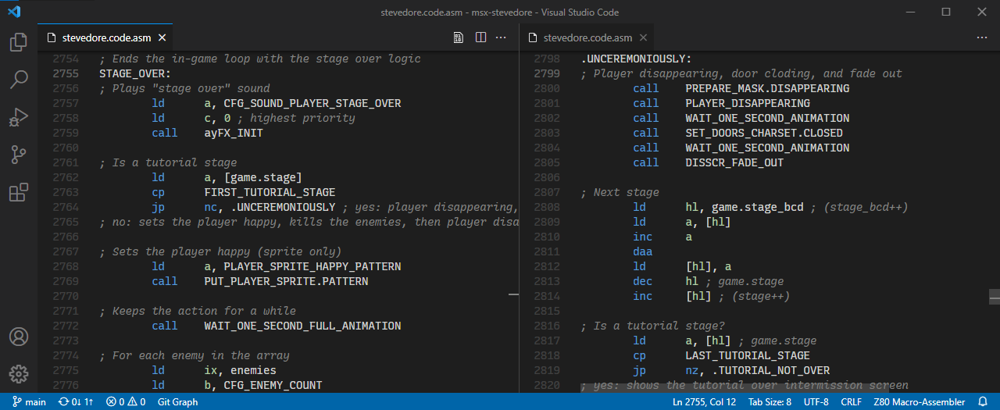

Precompression tools
Jan 4, 2026
As already hinted in the lastest post about
github.com/theNestruo/pcxtools,
several optimization algorithms to improve charset compression ratios have been implemented and measured.
As PCXTOOLS are coded in C, and its code is not well-suited to implement those algorithms,
they have been implemented as a separate command line application instead of embedding them in PCXTOOLS.
PCXTOOLS will keep the optimization flag (-o), despite it can be considered superseded.
This way, they can be used with already converted data, or with data created with any other conversion tool.
The lastest post lacked a visual explanation on why this optimizations are possible and how do they work.
Let's fix it by using some of the 16x16 tiles of the original freeware version of
Ninja Senki (© 2010 Jonathan Lavigne)
as an example.
The typical output of PNG2MSX would be as follows:
| Image | CHRTBL | CLRTBL | CHRTBL | CLRTBL |
|---|
 |
0000 0000 | 0 | 4 | 0000 0000 | 0 | 4 |
| 0000 0100 | 1 | 4 | 0000 0000 | 0 | 4 |
| 0000 0000 | 0 | 4 | 0000 0000 | 0 | 4 |
| 0000 0100 | 1 | 4 | 0000 0000 | 0 | 4 |
| 1111 0000 | 4 | 1 | 1111 1000 | 1 | 4 |
| 1111 1000 | 4 | 5 | 0010 0000 | 1 | 4 |
| 0000 0000 | 0 | 4 | 0010 0000 | 1 | 4 |
| 0000 0000 | 0 | 4 | 0010 0000 | 1 | 4 |
| 0100 0000 | 4 | 1 | 1111 1110 | 1 | 4 |
| 0000 0100 | 1 | 4 | 1111 1100 | 5 | 4 |
| 0000 0100 | 1 | 4 | 0000 0000 | 0 | 4 |
| 0000 0100 | 1 | 4 | 0000 0000 | 0 | 4 |
| 1111 0000 | 4 | 1 | 1111 0100 | 1 | 4 |
| 0000 0000 | 0 | 4 | 0010 0000 | 1 | 4 |
| 0000 0000 | 0 | 4 | 0000 0000 | 0 | 4 |
| 0000 0000 | 0 | 4 | 0000 0000 | 0 | 4 |
| 0000 0000 | 0 | 1 | 0000 0000 | 0 | 1 |
| 0000 0000 | 0 | c | 0000 0000 | 0 | c |
| 0000 0000 | 0 | f | 0000 0000 | 0 | f |
| 0000 0000 | 0 | 3 | 0000 0000 | 0 | 3 |
| 0000 0000 | 0 | 3 | 0000 0000 | 0 | 3 |
| 0000 0000 | 0 | 3 | 0000 0000 | 0 | 3 |
| 0000 0000 | 0 | 3 | 0011 1100 | 3 | c |
| 0111 1110 | 3 | c | 0001 1000 | 3 | c |
| 0011 1100 | 3 | c | 0011 1100 | c | 3 |
| 0110 0110 | c | 3 | 0001 1000 | c | 3 |
| 0011 1100 | c | 3 | 0011 1100 | 3 | c |
| 0110 0110 | 3 | c | 0001 1000 | 3 | c |
| 0011 1100 | 3 | c | 0000 0000 | 0 | c |
| 0001 1000 | 3 | c | 0000 0000 | 0 | c |
| 0000 0000 | 0 | c | 0000 0000 | 0 | c |
| 0000 0000 | 0 | 1 | 0000 0000 | 0 | 1 |
Actual output may vary depending on the particular conversion tool and/or the parameters used
(e.g.: PCXTOOLS have flags to control how the patterns will be generated).
Variations are possible because each line can be, for example, inverted. The foreground and background colors
can be swapped and the pattern negated and the line would still render as the same visual image.
But variations are also possible also because, ocassionally, there are unused values.
Lines with all bits set (or reset) will only use one of the color, either foreground or background,
and the other color can take any value without altering the rendered image.
Similarly, lines with both colors set to the same value can take any value in their pattern
and the rendered image will be the same.
In PCXTOOLS, values that do not contribute to the rendering the image are given the unused value of 0.
Highlighted in the example output:
| Image | CHRTBL | CLRTBL | CHRTBL | CLRTBL |
|---|
|
0000 0000 | 0 | 4 | 0000 0000 | 0 | 4 |
| 0000 0100 | 1 | 4 | 0000 0000 | 0 | 4 |
| 0000 0000 | 0 | 4 | 0000 0000 | 0 | 4 |
| 0000 0100 | 1 | 4 | 0000 0000 | 0 | 4 |
| 1111 0000 | 4 | 1 | 1111 1000 | 1 | 4 |
| 1111 1000 | 4 | 5 | 0010 0000 | 1 | 4 |
| 0000 0000 | 0 | 4 | 0010 0000 | 1 | 4 |
| 0000 0000 | 0 | 4 | 0010 0000 | 1 | 4 |
| 0100 0000 | 4 | 1 | 1111 1110 | 1 | 4 |
| 0000 0100 | 1 | 4 | 1111 1100 | 5 | 4 |
| 0000 0100 | 1 | 4 | 0000 0000 | 0 | 4 |
| 0000 0100 | 1 | 4 | 0000 0000 | 0 | 4 |
| 1111 0000 | 4 | 1 | 1111 0100 | 1 | 4 |
| 0000 0000 | 0 | 4 | 0010 0000 | 1 | 4 |
| 0000 0000 | 0 | 4 | 0000 0000 | 0 | 4 |
| 0000 0000 | 0 | 4 | 0000 0000 | 0 | 4 |
| 0000 0000 | 0 | 1 | 0000 0000 | 0 | 1 |
| 0000 0000 | 0 | c | 0000 0000 | 0 | c |
| 0000 0000 | 0 | f | 0000 0000 | 0 | f |
| 0000 0000 | 0 | 3 | 0000 0000 | 0 | 3 |
| 0000 0000 | 0 | 3 | 0000 0000 | 0 | 3 |
| 0000 0000 | 0 | 3 | 0000 0000 | 0 | 3 |
| 0000 0000 | 0 | 3 | 0011 1100 | 3 | c |
| 0111 1110 | 3 | c | 0001 1000 | 3 | c |
| 0011 1100 | 3 | c | 0011 1100 | c | 3 |
| 0110 0110 | c | 3 | 0001 1000 | c | 3 |
| 0011 1100 | c | 3 | 0011 1100 | 3 | c |
| 0110 0110 | 3 | c | 0001 1000 | 3 | c |
| 0011 1100 | 3 | c | 0000 0000 | 0 | c |
| 0001 1000 | 3 | c | 0000 0000 | 0 | c |
| 0000 0000 | 0 | c | 0000 0000 | 0 | c |
| 0000 0000 | 0 | 1 | 0000 0000 | 0 | 1 |
By carefully chosing the variation and the unused value to set, it is possible to reduce
the count of different values in the color table (CLRTBL) and to create longer chunks of repeated values.
Data with these characteristics is likely to yield better compression ratios
in either RLE-based compression algorithms or dictionary coders compression algorithms
(such as Einar Saukas'
ZX0).
The values of the example output can be modified to the CLRTBL value count is reduced to 4 values
(just 0x14 and 0x54 for the first tile,
and 0x1f and 0x3c for the second tile),
and also create chunks of consecutive repetitions of the same value.
Without altering the rendered image:
| Image | CHRTBL | CLRTBL | CHRTBL | CLRTBL |
|---|
|
0000 0000 | 1 | 4 | 0000 0000 | 1 | 4 |
| 0000 0100 | 1 | 4 | 0000 0000 | 1 | 4 |
| 0000 0000 | 1 | 4 | 0000 0000 | 1 | 4 |
| 0000 0100 | 1 | 4 | 0000 0000 | 1 | 4 |
| 0000 1111 | 1 | 4 | 1111 1000 | 1 | 4 |
| 0000 0111 | 5 | 4 | 0010 0000 | 1 | 4 |
| 0000 0000 | 1 | 4 | 0010 0000 | 1 | 4 |
| 0000 0000 | 1 | 4 | 0010 0000 | 1 | 4 |
| 1011 1111 | 1 | 4 | 1111 1110 | 1 | 4 |
| 0000 0100 | 1 | 4 | 1111 1100 | 5 | 4 |
| 0000 0100 | 1 | 4 | 0000 0000 | 1 | 4 |
| 0000 0100 | 1 | 4 | 0000 0000 | 1 | 4 |
| 0000 1111 | 1 | 4 | 1111 0100 | 1 | 4 |
| 0000 0000 | 1 | 4 | 0010 0000 | 1 | 4 |
| 0000 0000 | 1 | 4 | 0000 0000 | 1 | 4 |
| 0000 0000 | 1 | 4 | 0000 0000 | 1 | 4 |
| 1111 1111 | 1 | f | 1111 1111 | 1 | f |
| 0000 0000 | 3 | c | 0000 0000 | 3 | c |
| 0000 0000 | 1 | f | 0000 0000 | 1 | f |
| 1111 1111 | 3 | c | 1111 1111 | 3 | c |
| 1111 1111 | 3 | c | 1111 1111 | 3 | c |
| 1111 1111 | 3 | c | 1111 1111 | 3 | c |
| 1111 1111 | 3 | c | 0011 1100 | 3 | c |
| 0111 1110 | 3 | c | 0001 1000 | 3 | c |
| 0011 1100 | 3 | c | 1100 0011 | 3 | c |
| 1001 1001 | 3 | c | 1110 0111 | 3 | c |
| 1100 0011 | 3 | c | 0011 1100 | 3 | c |
| 0110 0110 | 3 | c | 0001 1000 | 3 | c |
| 0011 1100 | 3 | c | 0000 0000 | 3 | c |
| 0001 1000 | 3 | c | 0000 0000 | 3 | c |
| 0000 0000 | 3 | c | 0000 0000 | 3 | c |
| 1111 1111 | 1 | f | 1111 1111 | 1 | f |
Alternatively, instead of reducing the value count of CLRTBL,
variations can be chosen to reduce the value count of CHRTBL.
Mainly, setting the same foreground and background color, making the CHRTBL value unused,
then setting the desired value.
In the example output, chunks of consecutive repetitions of the same value in the CHRTBL data
can be created without altering the rendered image:
| Image | CHRTBL | CLRTBL | CHRTBL | CLRTBL |
|---|
|
0000 0100 | 4 | 4 | 1111 1000 | 4 | 4 |
| 0000 0100 | 1 | 4 | 1111 1000 | 4 | 4 |
| 0000 0100 | 4 | 4 | 1111 1000 | 4 | 4 |
| 0000 0100 | 1 | 4 | 1111 1000 | 4 | 4 |
| 0000 1111 | 1 | 4 | 1111 1000 | 1 | 4 |
| 0000 0111 | 5 | 4 | 0010 0000 | 1 | 4 |
| 0000 0111 | 4 | 4 | 0010 0000 | 1 | 4 |
| 0000 0111 | 4 | 4 | 0010 0000 | 1 | 4 |
| 1011 1111 | 1 | 4 | 1111 1110 | 1 | 4 |
| 0000 0100 | 1 | 4 | 1111 1100 | 5 | 4 |
| 0000 0100 | 1 | 4 | 1111 1100 | 4 | 4 |
| 0000 0100 | 1 | 4 | 1111 1100 | 4 | 4 |
| 0000 1111 | 1 | 4 | 1111 0100 | 1 | 4 |
| 0000 1111 | 4 | 4 | 0010 0000 | 1 | 4 |
| 0000 1111 | 4 | 4 | 0010 0000 | 4 | 4 |
| 0000 1111 | 4 | 4 | 0010 0000 | 4 | 4 |
| 0111 1110 | 1 | 1 | 0011 1100 | 1 | 1 |
| 0111 1110 | c | c | 0011 1100 | c | c |
| 0111 1110 | f | f | 0011 1100 | f | f |
| 0111 1110 | 3 | 3 | 0011 1100 | 3 | 3 |
| 0111 1110 | 3 | 3 | 0011 1100 | 3 | 3 |
| 0111 1110 | 3 | 3 | 0011 1100 | 3 | 3 |
| 0111 1110 | 3 | 3 | 0011 1100 | 3 | c |
| 0111 1110 | 3 | c | 0001 1000 | 3 | c |
| 0011 1100 | 3 | c | 0011 1100 | c | 3 |
| 0110 0110 | c | 3 | 0001 1000 | c | 3 |
| 0011 1100 | c | 3 | 0011 1100 | 3 | c |
| 0110 0110 | 3 | c | 0001 1000 | 3 | c |
| 0011 1100 | 3 | c | 0001 1000 | c | c |
| 0001 1000 | 3 | c | 0001 1000 | c | c |
| 0001 1000 | c | c | 0001 1000 | c | c |
| 0001 1000 | 1 | 1 | 0001 1000 | 1 | 1 |
As both optimizations cannot happen at the same time to the same lines,
it is necessary choose which one will be prioritized.
Several different algorithms have been implemented:
focus on getting chunks of repetitition in either CHRTBL or CLRTBL, with or without touching the other table.
Also, several merging strategies have been implemented to combine both sets of optimizations.
Compression ratio improvement will vary depending on the particular charset and the actual compression tool.
However, to gather sample data, all optimization algorithm combinations have been applied to different charsets,
then compressed with Einar Saukas' ZX0
compression tool, to determine sensible defaults for the precompression tools to give the best compression ratio
in most scenarios.
As expected, color-based optimizations performed better than pattern-based optimizations
(as they are more likely to repeat values). But, unintuitively, trying to combine color-based optimizations
with pattern-based optimizations did usually performed worse that entirely ignoring pattern-based optimizations.
As a result, the default configuration simply applies color-based optimizations,
but allows this color-based optimizations to reverse the pattern if necessary.
Let's take a look at some real world data, measured on:
- Seven 16x16 tiles of
Ninja Senki (© 2010 Jonathan Lavigne),
that are surprisingly well suited to MSX VDP limitations
(see the Ninja Senki Tile Sets
at the old Jonathan Lavigne blog).
- Full charsets from public GitHub repositories of MSX games:
- Four scenery charsets from
Trucho (MSX, Kamino, 2024).
Namely, the background graphics for the river, the reservoir, the pier, and the secret beach.
- Three scenery charsets from an undisclosed private GitHub repository.
If any precompression tool configuration achieved better compression ratio than the default configuration,
those configurations and their values are shown besides the default configuration.
| Raw size |
ZX01 size |
ZX01 compression ratio |
Optimization strategy |
| Ninja Senki |
|---|
| 448 |
274 | |
61,16% | |
Unoptimized PNG2MSX output2 |
| 448 |
272 | -2 |
60,71% | -0,45% |
PNG2MSX optimization flag (-o)3 |
| 448 |
263 | -11 |
58,71% | -2,46% |
Default configuration |
| 448 |
262 | -12 |
58,48% | -2,68% |
PatternAndColor |
| 448 |
257 | -17 |
57,37% | -3,79% |
PatternAndColor
and ColorAndPattern |
| 3⨯ charsets from public GitHub repositories |
|---|
| 9 632 |
5 382 | |
55,88% | |
Unoptimized PNG2MSX output2 |
| 9 632 |
5 131 | -251 |
53,27% | -2,61% |
PNG2MSX optimization flag (-o)3 |
| 9 632 |
4 969 | -413 |
51,59% | -4,29% |
Default configuration |
| 9 632 |
4 968 | -414 |
51,58% | -4,30% |
PatternAndColor
and ColorAndPattern,
prioritizing color |
| 4⨯ scenery charsets from Trucho |
|---|
| 10 240 |
4 190 | |
40,92% | |
Unoptimized PNG2MSX output2 |
| 10 240 |
3 867 | -323 |
37,76% | -3,15% |
PNG2MSX optimization flag (-o)3 |
| 10 240 |
3 714 | -476 |
36,27% | -4,65% |
Default configuration |
| 3⨯ charsets from undisclosed private GitHub repository |
|---|
| 10 752 |
5 640 | |
52,46% | |
Unoptimized PNG2MSX output3 |
| 10 752 |
5 275 | -365 |
49,06% | -3,39% |
PNG2MSX optimization flag (-o)3 |
| 10 752 |
4 984 | -656 |
46,35% | -6,10% |
Default configuration |
| All test data |
|---|
| 31 072 |
15 486 | |
49,84% | |
Unoptimized PNG2MSX output3 |
| 31 072 |
14 545 | -941 |
46,81% | -3,03% |
PNG2MSX optimization flag (-o)3 |
| 31 072 |
13 930 | -1556 |
44,83% | -5,01% |
Default configuration |
1Using Einar Saukas' ZX0 compressor
2Using PNG2MSX without any configuration flag
3Using PNG2MSX with the optimization flag (-o) only
|
While not optimal (higher compression ratios could be achieved if the optimization
focused on repeating blocks and not just values, or simply reordering the charset),
a size reduction ranging between ~7% and ~11% is interesting enough
to promote precompression tool usage even in this initial implementation.
Get the precompression tool and browse the source code at
github.com/theNestruo/precompression-tools
Happy pixelarting!!
PCXTOOLS v4.0
Dec 9, 2025
PNG2MSX
is a free command line tool to convert PNG images to TMS9918 (MSX-1 VDP) format
(i.e. CHRTBL/CLRTBL/NAMTBL-ready values).
The new version 4.0 features an optimization flag (-o)
that attempts to optimize the generated CLRTBL for compression.
Where there is one unused color (i.e.: in a solid color line, a line with pattern 0x00 or 0xff),
tries to replace that unused color for the CLRTBL byte to match the value of the contiguous bytes,
inverting the pattern if necessary.
This leads to longer runs of repeated values in the CLRTBL data,
and those runs of repeated values usually yield better compression ratios.
Let's take a look at some real world data...
The game Stevedore does not have a particularly large amount of graphical data.
It has just three charsets: the main charset, a separate partial charset for the title screen,
and a separate partial charset for the ending sequence graphics.
These resources are about ~8 KB of uncompressed raw data,
and were compressed to ~4 KB using
Einar Saukas'
superb ZX0 compressor.
Configuring the toolchain to apply optimization when converting the charsets
and compressing the optimized raw binary data, there is a gain of 252 bytes:
| Stevedore resources |
Raw size |
Compressed1 size |
Compressed1 size
(optimized) |
Delta |
| 3⨯ CHRTBL |
4 072 B |
2 671 B |
2 742 B |
+71 B |
| 3⨯ CLRTBL |
4 072 B |
1 481 B |
1 158 B |
-323 B |
| Total |
8 144 B |
4 152 B |
3 900 B |
-252 B |
| 1
Using Einar Saukas' ZX0 compressor |
Let's run a similar experiment with Trucho.
Contrarily to Stevedore, Trucho is charset-heavy. The charset-based graphics of Trucho are split in 25 charset files
—most of them partial— that weight ~34 KB of uncompressed raw data.
Fortunately for the coder and the musician, that also wanted to put things inside the 48 KB cartridge,
graphics were also compressed using ZX0 compressor and ended up taking just ~15 KB.
Configuring the toolchain to apply optimization when converting the charsets,
in this particular case, gives a improvement of 1 336 bytes. More than a whole kilobyte!
| Trucho resources |
Raw size |
Compressed2 size |
Compressed2 size
(optimized) |
Delta |
| 25⨯ CHRTBL |
17 752 B |
10 286 B |
10 606 B |
+321 B |
| 25⨯ CLRTBL |
17 752 B |
5 603 B |
3 946 B |
-1 657 B |
| Total |
35 504 B |
15 889 B |
14 552 B |
-1 336 B |
| 2
Using Einar Saukas' ZX0 compressor |
Currently, only one optimization algorithm is provided. The gain in CLRTBL compressed sizes
already outweighs the loses in CHRTBL compressed sizes, and the benefit is not negligible.
But it is probably worth implementing variations in the optimization algorithm
(for example: with pattern inversion, to prevent the growth in CHRTBL compressed sizes),
so expect a new v4.1 or v5.0 version soon!
Meanwhile, get the new version and browse the source code at
github.com/theNestruo/pcxtools
Happy pixelarting!!
Z80 Assembly meter v6.0.0
Jul 2, 2025
Font ligatures!? Where we're going we don't need font ligatures!!
The Z80 Assembly meter extension for Visual Studio Code reaches version 6.0.0
with Inlay Hints (additional information about source code that is rendered inline)
that show the timing of the execution flow of subroutines (up to the first unconditional exit point),
and timing of the execution flow up to conditional and unconditional exit points.
The extension is also available now in
Open VSX Registry for users of VS Codium (or any other VS Code fork).

Get it here:
Z80 Assembly meter,
or here: Z80 Assembly meter
Browse the source code at
github.com/theNestruo/z80-asm-meter-vscode
Happy coding!!
Desperado - Music patch
Jan 2, 2025
Desperado (Topo Soft, 1987), also known as Gunsmoke (Go!, 1987), was released for ZX Spectrum, Amstrad CPC, and MSX.
If you listen to the title music
(composed by Gominolas)
of the MSX and the Amstrad CPC versions, you will notice the MSX version is missing one entire channel.
This can be confirmed using the built-in PSG Toy tool of meisei MSX emulator (by Hap),
where channel C is continuously displays $000 / 0:
Does this happen by a bug of the replayer code?
Has it been deliberately cut to save space?
Let's find out…
The following fragment of code initializes the music in the buffers used by the replayer:
LA886: ; ...
xor a ; Channel A
ld de, $8854 ; Data for channel A
call L7FE9 ; Initialize music channel (A)
inc a ; Channel B
ld de, $88A3 ; Data for channel B
call L7FE9 ; Initialize music channel (B)
inc a ; Channel C
ld de, $898A ; Data for channel C
call L7FE9 ; Initialize music channel (C)
LA8BE: call LAB4E ; Check for any key
jr z,LA8BE ; Infinite loop until any key is pressed
; ...
And the first bytes of the data for every channel are:
; Data for channel A
L8854: db $85, $64, $87, $00, $81, $01, $80, $0C
db $83, $10, $8C, $00, $21, $1F, $1D, $21, ...
; Data for channel B
L88A3: db $87, $01, $81, $01, $8A, $01, $80, $0C
db $8C, $04, $83, $10, $39, $3C, $3C, $83, ...
; Data for channel C
L898A: db $8B, $00, $81, $01, $80, $0D, $83, $10
db $30, $83, $08, $32, $33, $83, $10, $34, ...
The replayer (invoked within the H.TIMI hook) is located at L8008.
Reading its disassembly reveals that the bytes with its most significant bit (the $80+n bytes) are “commands”.
Each command invokes one subroutine based on the following indirection table:
L84BB: dw L8202 ; Subroutine for command: $80
dw L8220 ; Subroutine for command: $81
dw L8282 ; Subroutine for command: $82
...
dw L822B ; Subroutine for command: $8b
...
dw L8395 ; Subroutine for command: $8e
dw -1 ; Subroutine for command: $8f (invalid)
...
dw -1 ; Subroutine for command: $e5 (invalid)
Command $8B, only used in channel C, seems to completely mute a channel
(by zeroing the replayer working buffer for that channel).
As it happens to appear in the first byte of the data for that channel,
it can be skipped by initializing the channel two bytes after (i.e.: ld de, $898A + 2),
unmuting the channel, and revealing that the full data for that channel is there.
However, it will use a very monotonous timbre and a constant volume.
A better option is to remove that command $8B, replacing it by the command $87.
This command $87 is used at the beginning of the data of the other two channels,
and seems to set the “instrument”, the volume variations that shape a pseudo-envelope.
The difference is notable, as you can hear in Araubi's post in X
and Araubi's post in Bluesky.
Enjoy!!
Namcot patches
May 11, 2024
Based on
previous work
by
TINY,
I have prepared IPS patches for some Namcot MSX games.
Also, these patches includes the fix of a graphical glitch of
Dig Dug (NAMCOT, 1984)
in MSX2 or later that, as far as I know, was known but had never been actually patched.
Get them here:
Namcot - patches.zip
Browse the source code at
github.com/theNestruo/msx-namcot-patch
Happy patching!!
Congratulations, Trucho!
Apr 27, 2024
Congratulations, Trucho!
Trucho won
Best 8-bit game in the II Edition of the RetroPaella Awards '24
held at
Retrpolis Valencia!
Trucho physical cartridges are available at
MSX Cartridge Shop
and digital editions are available at
thenestruo.itch.io/trucho
Enjoy!!
Trucho
Apr 6, 2024
Physical cartridges available now at
MSX Cartridge Shop!
Digital editions available now at
thenestruo.itch.io/trucho
Have fun!!
Z80 Assembly meter v4.0.0
Aug 17, 2023
Font ligatures!? Where we're going we don't need font ligatures!!
The Z80 Assembly meter extension for Visual Studio Code reaches version 4.0.0
with huge performance improvements and supporting:
NEC PC-8000 series, Sjasm and SjASMPlus repeat count,
SjASMPlus register list instructions and repetitions,
and advanced timing algorithms.
Major version 6.0.0 released
RUN'23 minigame
Apr 15, 2023
A mini-game for four players in one MSX.
Coded in two evenings for the RUN'23
(“Reunin de Usuarios de MSX del Norte”)
held in Hoznayo (Cantabria, Spain) on April 15th, 2023.
Get the cartridge image here:
run23.zip
Browse the source code at
github.com/theNestruo/msx-msxlib/tree/master/games/minigames/run23
Find some friends and have fun!!
MSX slideshow of Justin Cyr's “1008 32x32 female portrait studies done in the MSX palette”
Jan 26, 2023
“Ok, here's all 1008 32x32 female portrait studies done in the MSX palette.
2 years, 3 months and one day later, it's done.”
Justin Cyr – Feb 8, 2017
Justin Cyr used the MSX palette to create 1008 32x32 female portraits.
The palette and the resolution made them a very good fit for the multicolor graphic mode
of the MSX (also known as SCREEN 3),
so I coded a slideshow to learn about MegaROMS and the multicolor graphic mode.

Get the cartridge image here:
Justin Cyr's 1008 32x32 female portraits slideshow.zip
Browse the source code at
github.com/theNestruo/msx-justincyr-female-portraits
Enjoy!!
A study of Sony HitBit firmware fonts
Jan 17, 2023
(Not so) recently, I acquired a Sony
HB-11
MSX, also known as
HitBit U.
The firmware of this computer was previously undumped, so I
dumped it
Beside the well-known features of Kanji-ROM, Japanese Word Processor, and English-Japanese dictionary
—they are written on top of the computer—, the firmware contains a quite unique feature:
the ability to change the system font with the extra BASIC instruction
CALL FONT(n).
Inspecting other firmwares, I found that Sony
HB-F900
also had a similar feature
with three additional fonts.
As the
HB-11
firmware easter egg is similar to the one present in the
Sony
HB-F1/HB-F1II
firmwares, I analyzed them too.
I found two additional fonts (one used for the easter egg, the other one used sparingly in the firmware),
but no
CALL FONT
instruction.
However, those fonts can still be used as system fonts using the system variable CGPNT (0xF91F, 3 bytes):
- The easter egg font is located in the slot 3-0, at address 0x47CA for the
HB-F1
(
POKE &HF91F,&H83:POKE &HF920,&HCA:POKE &HF921,&H47), or 0x485C for the
HB-F1II
(POKE &HF91F,&H83:POKE &HF920,&H5C:POKE &HF921,&H48).
- The serif font is located in the slot 3-2, at address 0x554F for the
HB-F1
(
POKE &HF91F,&H8B:POKE &HF920,&H4F:POKE &HF921,&H55), or 0x54DB for the
HB-F1II
(POKE &HF91F,&H8B:POKE &HF920,&HDB:POKE &HF921,&H54).
Now, let's take a look at all these fonts in one single image:

Regarding the kanji/kana part of the character set, it is curious that, despite the
HB-11
has the greater number of alternative fonts (six fonts), all of them use the same kanji/kana set:
a less geometric and more scripted version of the default system font.
This kanji/kana set is also used for two of the alternative fonts of the
HB-F900,
but it is not used in any of the
HB-F1/HB-F1II
alternative fonts.
The
HB-F1/HB-F1II
alternative fonts have two alternate kanji/kana sets:
one features slightly larger katakanas, and the other one uses a bold variant of those larger katakanas.
The rest of the characters of the kanji/kana set are different in every alternative font.
The
HB-F900
also have a bold kanji/kana set,
but it is not the same as the bold set from the
HB-F1/HB-F1II:
in this alternative font, the entire kanji/kana set is bold, and seems to be based on the default system font
(unlike the
HB-F1/HB-F1II
version, that was based on the larger katakana set).
Regarding the western characters, the only alternative set that is actually shared between computers
is the LCD-like font. This font appears in both the
HB-11
and the
HB-F900.
There is a serif alternative font in every firmware, but it is not exactly the same:
The
HB-F900
looks the first iteration of the serif font,
as some symbols are directly taken from the default system font,
and the lowercase letters seems to be designed using the default system font as a base.
The
HB-11
and the
HB-F1/HB-F1II
variants of the serif font
are more elaborated; more symbols and lowercase letters are redesigned.
Both are very similar to each other, but the
HB-F1/HB-F1II
version
seems to be the most evolved, based on some details in the uppercase and lowercase
C
letters
and the circumflex character.

Unfortunately, using these fonts as the system font is only useful for MSX-BASIC programs.
Early software that use the system font, such as
Mr. Chin (HAL Laboratory, 1984)
or
Youkai Yashiki (CASIO, 1986), is not reading the system variable CGPNT
but CGTABL (0x0004, 2 bytes), that always points to the BIOS default system font.
Fortunately, it is possible nowadays to patch a BIOS ROM, inject one of these fonts,
and create a fake custom BIOS. Using this BIOS (most likely, using emulators), we can experience
how would those early titles look with the cool looking LCD-like or Broadway-styled fonts
instead the boring default system font:


We can also imagine that different manufacturers could have used stylized system fonts
to give their computers a distinctive look and more personality:

Have fun!!
Youkai Yashiki - Graphics patch source code
Oct 30, 2022
One year (and a half) ago,
the graphical patch for
Youkai Yashiki (CASIO, 1986)
was released,
also known as
Ghost House.
A friendly reminder of the superb graphics
yazioh
did:


Today, I have finally cleaned up the source code of the patches and uploaded it to GitHub.
Get the patch here:
Youkai Yashiki - Graphics patch v1.1 (Yazioh & Nestruo, 2021-07-12).zip
Browse the source code at
github.com/theNestruo/msx-youkaiyashiki-patch
Happy patching!!
Recursive Mono Duotone Custom
Oct 17, 2022
Recursive Mono Duotone Custom (Rec Mono DtCustom) is a custom build of
Recursive Sans & Mono.
Rec Mono Duotone
A personal favorite — this use the Linear style for Regular text and Casual styles for Bold, Italic, & Bold Italic text. In many themes that use italic styles, this will give most code a utilitarian look, but set comments, some keywords, and certain headlines in the more-handwritten Casual style.
This custom build is based on Rec Mono Duotone configuration, with some OpenType Features tweaks:
- restores the non-simplified
l,
- uses the simplified
r,
- restores the serif in
L
and
Z, and
- restores the non-simplified
6
and
9.

Get it here:
RecMonoDtCustom-1.085.zip
Happy coding!!
Happy birthday, Stevedore!
Oct 18, 2022
Happy birthday, Stevedore!
Two years ago, Stevedore for MSX was released.
To celebrate the second anniversary, you can now download the original soundtrack converted to MP3 for your convenience!
You can now play (and download) for free at
thenestruo.itch.io/stevedore
Physical cartridges can be acquired at
MSX Cartridge Shop
And you can browse the source code at
github.com/theNestruo/msx-stevedore
Have fun!!
Stevedore password generator
Jul 09, 2022
Stevedore password system was cracked by MSX user Briqunullus on Jan 16, 2021, and then I shared the
password generator
I used during the development process as a
GitHub Gist
.
Today, I was talking with
MSX AREA
editor
Juanmi Ortuño
about Stevedore,
then I remembered the password generator was not available online.
So here it is:
Have fun!!
Z80 Assembly meter v3.0.0
Feb 19, 2022
The Z80 Assembly meter extension for Visual Studio Code reaches version 3.0.0
and gains support for user-defined macros.
Major version 4.0.0 released
Major version 6.0.0 released
Z80 Assembly meter v2.0.0
Nov 18, 2021
The Z80 Assembly meter extension for Visual Studio Code reaches version 2.0.0
and gains support for Pasmo, SDCC, and SjASMPlus assembler syntax.
Major version 3.0.0 released
Major version 4.0.0 released
Major version 6.0.0 released
Happy birthday, Stevedore!
Oct 18, 2021
Happy birthday, Stevedore!
One year ago, Stevedore for MSX was released.
To celebrate the first anniversary, you can now play (and download) for free at
thenestruo.itch.io/stevedore
Physical cartridges can be acquired at
MSX Cartridge Shop
And you can browse the source code at
github.com/theNestruo/msx-stevedore
Have fun!!
You can now download the original soundtrack
Due a bug in BlueMSX 2.8.x emulator, players were getting a forced
game over
after loading a save state.
If you replace you .exe with BlueMSX 2.9.0, save states will work as intended.
Get the Blue MSX 2.9.0 compiled executable here:
github.com/ducasp/blueMSX
PCXTOOLS v3.0
Oct 02, 2021
PNG2MSX
and
PNG2SPR[+]
are free command line tools to convert PNG images to TMS9918 (MSX-1 VDP) format
(i.e. CHRTBL/CLRTBL/NAMTBL-ready values, and SPRTBL/SPATBL-ready values).
TMX2BIN
is a free command line tool to convert Tiled maps to binary.
The new version 3.0 uses PNG
(Portable Network Graphics)
files as inputs,
instead of the obsolete PCX
(PiCture eXchange).
Get them and browse the source code at
github.com/theNestruo/pcxtools
Happy coding!!
Major version 4.0 released
Youkai Yashiki - Graphics patch
Jul 8, 2021
One month ago,
these superb graphics by
yazioh
were just a mock-up of
Youkai Yashiki (CASIO, 1986),
also known as
Ghost House, for MSX.

Today, you can play with those graphics!


The graphical patch for the game is offered in two flavours:
- JP, with the original items (onigiri, omamori, geta shoes…) and original ending message
- EN, with reworked items (hamburguer, four leaf clover, sneakers…) and translated ending message.
Additionally, a minipatch is provided for those who want to play with enhancements but using the original graphics.
Get it here:
Youkai Yashiki - Graphics patch v1.1 (Yazioh & Nestruo, 2021-07-12).zip
Enjoy!!
Pyramid Warp Enhanced+
May 26, 2021
Can you spot the differences between the original MSX
Pyramid Warp (T&E soft, 1983)
and the Enhanced+ version?


With music by
bitcaffe
and graphics by
nenefranz
Get it here:
PyramidWarp.enhancedplus.rom
Browse the source code, including an annotated disassembly of the original
Pyramid Warp (T&E soft, 1983), at
github.com/theNestruo/msx-pyramidwarpex
Enjoy!!
Dark- (VSCode theme) released
Apr 23, 2021
Simple dark themes, based on the default Dark (Visual Studio) theme but with less syntax highlight.
Get them here:
Dark-
Browse the source code at
github.com/theNestruo/dark-minus-theme-vscode
Happy coding!!
Stevedore
Oct 19, 2020

Available now at
MSX Cartridge Shop!
You can now play (and download) for free
You can now download the original soundtrack
Z80 Assembly meter v1.0.0
Mar 8, 2020
The Z80 Assembly meter extension for Visual Studio Code reaches version 1.0.0
and gains support for Z80N (ZX Spectrum Next Extended Z80 instruction set).
Major version 2.0.0 released
Major version 3.0.0 released
Major version 4.0.0 released
Major version 6.0.0 released
Z80 Assembly meter (VSCode extension) released
Sep 14, 2020
The Z80 Assembly meter extension for Visual Studio Code meters clock cycles and bytecode size from Z80 assembly source code.
Major version 1.0.0 released
Major version 2.0.0 released
Major version 3.0.0 released
Major version 4.0.0 released
Major version 6.0.0 released
Congratulations, Pérez the Mouse!
Feb 5, 2012
Congratulations, Pérez the Mouse!
Pérez the Mouse
won first place in the MSX-BASIC Contest 2011!
Let's celebrate by revealing a little secret... Did you know there is an hidden jukebox in the cassette?


Get it here:
Perez the Mouse v1.1 (theNestruo & Wonder, 2011-12-09).zip
Have fun!!
Pérez the Mouse
Oct 26, 2011
Pérez the Mouse presented to
MSXBlog's
MSX-BASIC Contest 2011!


With music by Wonder
Get it here:
Perez the Mouse v1.1 (theNestruo & Wonder, 2011-12-09).zip
Enjoy!!
Contest entry updated! More graphics, more difficulty levels, more musics, and faster gameplay!
Pérez the Mouse won first place in the MSX-BASIC Contest 2011!
{kind=link}